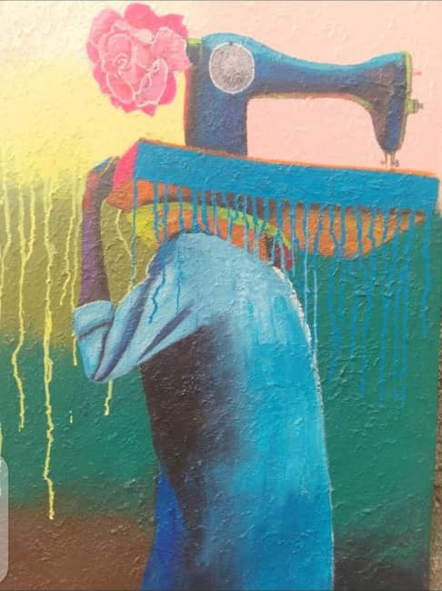
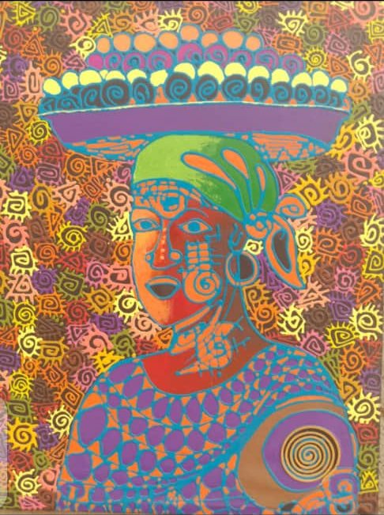
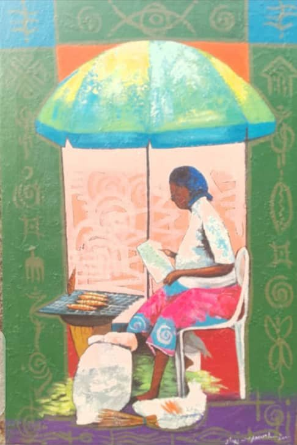
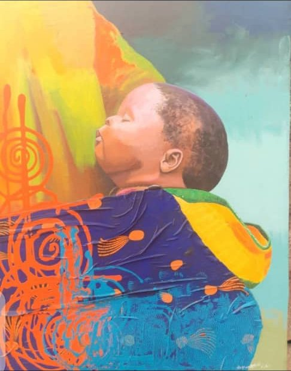
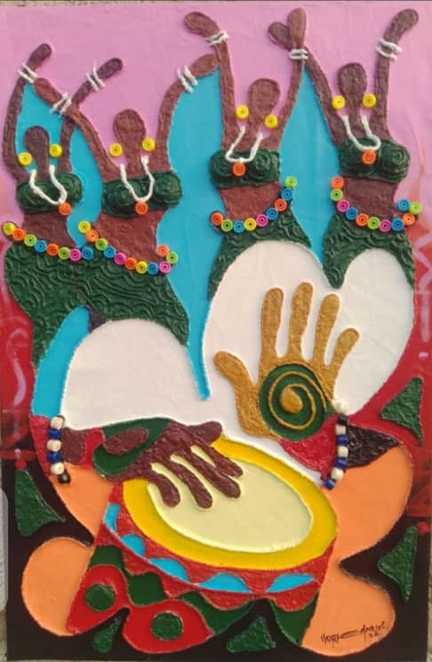

Textile & fashion design
Original African designs, made to your measure and stitched with pride.
Start on WhatsApp How it works
Clothing rooted in culture
We design and sew African clothing with colour, pattern and fit at the centre. From a simple everyday outfit to a full wedding party, every piece is cut to your measurements and finished with care.
Bring a reference photo, a fabric you love or just an idea, and we help turn it into something you will be proud to wear.

Cut for you. Sewn with pride.
Colour and pattern are our language. Fit is how we say it properly.

Everyday and event wear
Outfits for work, church, parties and celebrations, made to fit you rather than a size chart. Tell us the occasion and we suggest styles and fabrics.
- Tops, dresses, skirts and co-ords
- Matching sets for couples and families
- Aso ebi for weddings and events

Traditional attire
Agbada, kaftan, senator and other classic styles, cut and finished with care for weddings, naming ceremonies and everyday dignity.
- Agbada and kaftan
- Senator and native sets
- Caps and finishing details

Headwraps and details
Gele, head ties and accessories that complete the look. Colour and fabric are chosen to work with your outfit and your skin tone.
- Gele and head ties
- Matching accessories
- Colour advice

Heritage meets modern fashion
Bespoke designs in adire, aso ebi and customised fabrics. We craft agbada, caftan, shirts and ladies’ casual wear to your measure.
- Adire and tie-dye artistry
- Aso ebi for weddings and events
- Call 08062225068, 08171534029 or 07075525139
The beauty of Yoruba tie-dye
Adire is hand-dyed cloth with patterns that are never quite the same twice. We design with it, and sew it into pieces you can wear every day.
- Hand-dyed fabrics
- Custom colour mixes
- Made to measure
Three ways to wear it
Adire
Resist-dyed indigo and colour, from simple tops to full sets.
Aso ebi
Matching outfits for weddings and celebrations, sewn for every guest.
Agbada and caftan
Classic men’s wear, tailored with careful finishing.
Pictures








How it works
Share your idea
Photos, sketches, fabric or an occasion are all fine.
Measurements
We take your measurements, in person or by a simple guide.
Fabric and design
We agree the style, fabric and details together.
Fitting and finish
We check the fit and make final adjustments.
Good to know
Can I bring my own fabric?
Yes. Bring it, or let us help you choose.
Do you do group orders?
Yes. Matching outfits for weddings, families and teams are a speciality. Tell us the numbers and date.
How long will it take?
It depends on the style and quantity. We confirm a timeline when we agree your order.
Also from Gatoworks


Tell us what you have in mind.
Message us on WhatsApp and we will reply with ideas, timelines and a quote.
Chat on WhatsApp Other ways to reach us